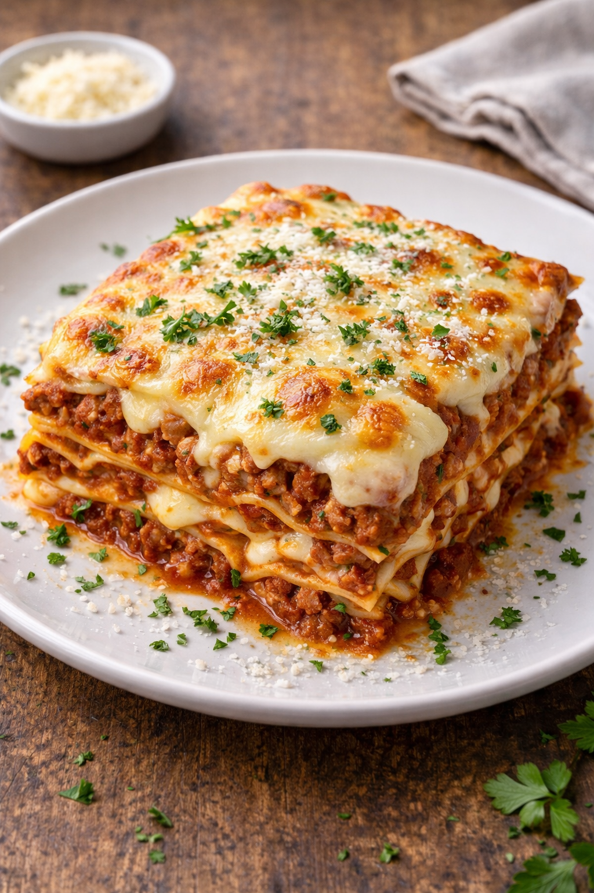

Lasagna

Descripción
La lasagna a la boloñesa es un clásico platillo italiano amado por muchas personas en todo el mundo. Esta pasta horneada consiste en capas de salsa de carne, salsa bechamel y láminas de lasaña, es perfecto
para una cena familiar o una ocasión especial. Tanto si eres un principiante en la cocina como si eres un experimentado, esta receta es fácil de seguir e impresionará a tus invitados con sus ricos sabores y textura deliciosa.
Ingredientes
Para el relleno (boloñesa de carne):
- 500 g. de carne (una mezcla de cerdo y ternera)
- 2 pimientos rojos
- 2 zanahorias
- 2 dientes de ajo
- 150 g. de bacon o panceta
- 2 cebollas grandes
- 250 g. de tomate natural (1 vaso aproximadamente)
- 250 ml de vino blanco (200 ml. aproximadamente)
- 100 ml. de aceite de oliva virgen extra
- 1 cucharita colmada de orégano seco (o hierbas provenzales)
- Sal y pimienta negra recién molida (al gusto de cada casa)
Para la lasagna:
- 12 láminas de lasaña o lasagna Garofalo
- Para hacer la bechamel: (para un litro más o menos, la suficiente para la lasaña): 125 g de harina de trigo de todo uso
- 125 g de mantequilla
- 1 litro de leche entera
- Una pizca de nuez moscada (unos 4 g.)
- Sal y pimienta negra recién molida (al gusto de cada casa)
- Para finalizar y gratinar la lasagna: 100-120 g. de queso rallado Grana Padano (o mezcla con vuestro queso preferido para gratinar)
Pasos
- Calentamos una cazuela grande de agua, la más ancha de casa. Cuando empiece a hervir echamos 2 puñados generosos de sal.
- Introducimos las láminas de lasaña una a una sin que se toquen (para que no se peguen entre ellas).
- Tenemos que remover con una cuchara de madera y en unos 10 minutos sacamos las láminas. Las estiramos encima de unas hojas de papel absorbente de cocina. Aunque os parezca que no están, acabarán haciéndose en el horno.
- Cortamos las verduras en trocitos pequeños para que se junten bien en la salsa. Las zanahorias las cortamos lo más fino posible. Os recomiendo laminarlas con el pelador de las patatas porque a la hora de pocharlas si las tiras son gruesas no se hacen. Reservamos todo en un bol.
- En otra cazuela echamos aceite de oliva virgen extra. Empezamos introduciendo pochando la cebolla y el ajo, cuando esté doradita, añadimos el resto de ingredientes.
- Sofreímos todo a temperatura media durante unos 15 minutos y esperamos por la carne. Salpimentamos la carne al gusto y la echamos a la cazuela con la verdura. Dejamos que se pase durante 5 minutos y cuando veamos que va cambiando de color introducimos el bacon o panceta en trozos muy pequeños. Vertemos un vaso de vino blanco y esperamos a que reduzca (otros 5 minutos a fuego medio).
- Añadimos un vaso de tomate natural, echamos la cucharadita de orégano y rectificamos de sal y pimienta si hiciese falta (probad la salsa para ver si está a vuestro gusto). Removemos la carne con las verduras y retiramos del fuego, dejamos enfriar un poco.
- Precalentamos el horno a 200º C durante 15 minutos, lo justo para hacer el resto de la lasaña.
- Montar la lasaña es sencillo. Ponemos en el fondo de una fuente apta para horno unas cucharadas de la bechamel. Encima las láminas, una capa del relleno, otra vez la bechamel y así hasta tener 3 pisos. Se pueden hacer las capas de lasaña que quieras o las que te permita la fuente.
- Finalmente rematamos con una capa generosa de bechamel. Y para aquellos que le guste el queso, rallamos por encima aquel que más os guste, que sea especial para gratinar. Os recomiendo un queso curadito italiano.
- Horneamos en la bandeja del medio durante 15 minutos a 180º C y durante 3-5 minutos en la parte superior con el gratinador puesto para que se dore.
Home